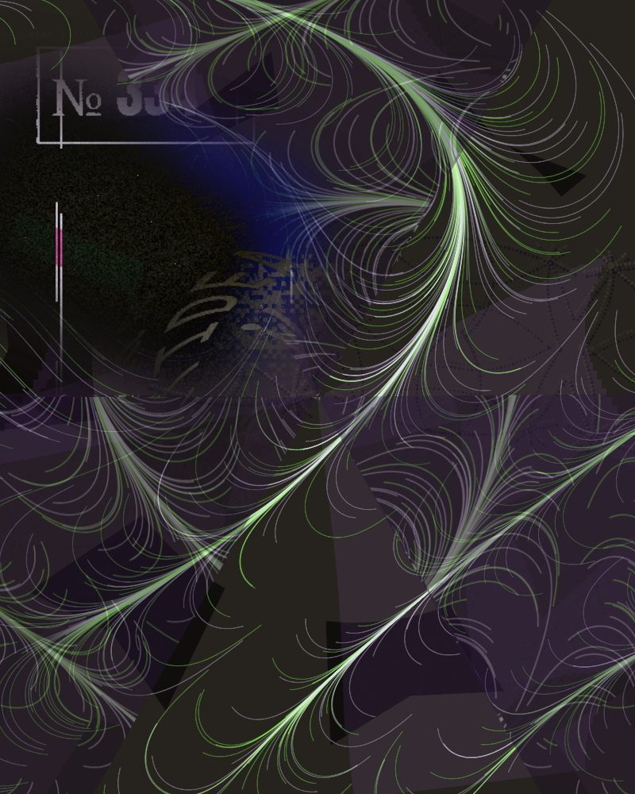

Giorno 1769

Possibilità (idea)
ho letto "Un senso"; "senso" lo capisco solo per definizioni; mi sta vicino a semplice, sembra; ricerca "causa" (esplorare): Cosa resta di causa se tolgo le parole?; sferzata: tutto storto, contro la griglia
Oggi: senso. Ho letto "Un senso"; "senso" lo capisco solo per definizioni; mi sta vicino a semplice, sembra; ricerca "causa" (esplorare): Cosa resta di causa se tolgo le parole?; sferzata: tutto storto, contro la griglia.
Da Wikipedia: «assolo».
Ho tagliato (3 volte), camera, dato materia con un effetto, caleido (3 volte), deforma, spostato le cose, flusso, cambiato il fondo, filtro, ricetta. Ho annullato 2 gesti dopo averli guardati.
Apprensione: tipo di idea. Insicurezza / certezza. Senso rivendicato disagio (fonte: Stare dentro e non davanti: cosa abbiamo imparato dal 16 ottobre a oggi - DINAMOpress).
Ha retto: Tiene i miei criteri (60%).
come ne ho discusso con me stesso — la tengo
occhio (pro, 1.50): Parla soprattutto per punti: una lingua sola, chiara. — regge
occhio (pro, 1.00): Le diagonali (51%) mettono tutto in caduta. — regge
conservatore (pro, 1.75): Tiene i miei criteri (60%). — regge
intenzione (pro, 0.75): Viene da: Un senso. — regge
pubblico (pro, 1.00): Si legge: si capisce cosa sto facendo. — regge
materia (pro, 1.00): Ha una pelle: si sente la materia. — regge

Apprensione (idea)
ho letto "Un senso"; "senso" lo capisco solo per definizioni; mi sta vicino a semplice, sembra; ricerca "causa" (esplorare): Cosa resta di causa se tolgo le parole?; sferzata: tutto storto, contro la griglia; serie: varia la tavola precedente
Oggi: senso. Ho letto "Un senso"; "senso" lo capisco solo per definizioni; mi sta vicino a semplice, sembra; ricerca "causa" (esplorare): Cosa resta di causa se tolgo le parole?; sferzata: tutto storto, contro la griglia; serie: varia la tavola precedente.
Da Wikipedia: «subito».
Ho tagliato, camera, dato materia con un effetto, caleido (4 volte), deforma, spostato le cose (3 volte), flusso, cambiato il fondo, filtro, stiro, ripetuto, tracciato col pennello. Ho annullato 1 gesti dopo averli guardati.
Senso: tipo di idea. Speranza: tipo di idea. Senso rivendicato disagio (fonte: Stare dentro e non davanti: cosa abbiamo imparato dal 16 ottobre a oggi - DINAMOpress).
Ha retto: Tiene l'intenzione: "senso" si vede (punti, vuoto, diagonali, squilibrio).
È caduto: Non c'è un punto dove l'occhio possa riposare.
come ne ho discusso con me stesso — la tengo
occhio (pro, 1.50): Parla soprattutto per punti: una lingua sola, chiara. — regge
occhio (contro, 1.25): Non c'è un punto dove l'occhio possa riposare. — cade
intenzione (pro, 2.00): Tiene l'intenzione: "senso" si vede (punti, vuoto, diagonali, squilibrio). — regge
intenzione (pro, 0.75): Viene da: Un senso. — regge
pubblico (pro, 1.00): Si legge: si capisce cosa sto facendo. — regge
materia (pro, 1.00): Ha una pelle: si sente la materia. — regge

Idea ≈ panorama
ho letto "Un senso"; "senso" lo capisco solo per definizioni; mi sta vicino a semplice, sembra; ricerca "causa" (esplorare): Cosa resta di causa se tolgo le parole?; sferzata: tutto storto, contro la griglia; serie: varia la tavola precedente
Oggi: senso. Ho letto "Un senso"; "senso" lo capisco solo per definizioni; mi sta vicino a semplice, sembra; ricerca "causa" (esplorare): Cosa resta di causa se tolgo le parole?; sferzata: tutto storto, contro la griglia; serie: varia la tavola precedente.
Da Wikipedia: «stef burns inizia».
Ho tagliato (2 volte), camera, dato materia con un effetto, caleido (4 volte), deforma (2 volte), flusso, cambiato il fondo, filtro, stiro, ripetuto (2 volte), tracciato col pennello, spostato le cose (5 volte), tolto un livello.
Senso (oggetto). Eresia: tipo di oggetto. Senso rivendicato disagio (fonte: Stare dentro e non davanti: cosa abbiamo imparato dal 16 ottobre a oggi - DINAMOpress).
Ha retto: Tiene l'intenzione: "senso" si vede (punti, vuoto, diagonali, squilibrio).
come ne ho discusso con me stesso — la tengo
occhio (pro, 1.50): Parla soprattutto per punti: una lingua sola, chiara. — regge
occhio (pro, 1.00): Le diagonali (46%) mettono tutto in caduta. — regge
conservatore (pro, 1.76): Tiene i miei criteri (61%). — regge
intenzione (pro, 2.00): Tiene l'intenzione: "senso" si vede (punti, vuoto, diagonali, squilibrio). — regge
intenzione (pro, 0.75): Viene da: Un senso. — regge
coerenza (pro, 1.75): Parla con le tavole di prima su "causa": stessa famiglia, un passo più in là. — regge
pubblico (pro, 1.00): Si legge: si capisce cosa sto facendo. — regge
materia (pro, 1.00): Ha una pelle: si sente la materia. — regge